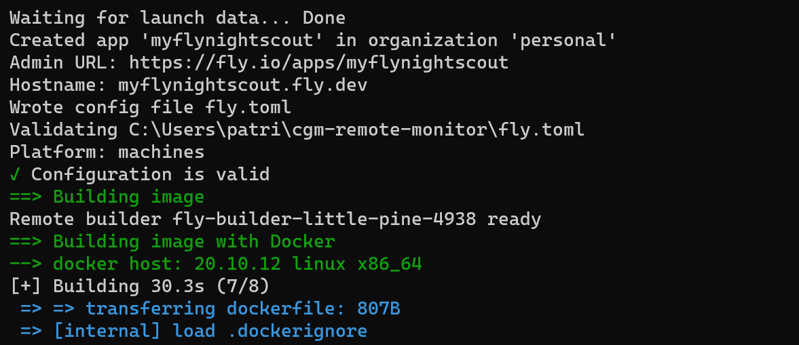

Nightscout in Fly.io
Too complicated? Not what you’re looking for?
Consider a hosted Nightscout service! Check for easier solutions here.
Fly.io

You can create your new Nightscout site in Fly.io.
Pros:
Nightscout fits in the free tier
Cons:
Maintaining your site requires the use of command line instructions, not very intuitive
Fly.io stores variables as secrets: you cannot read them
Relying on the MongoDB Atlas database
Step 0: Create a database
Make sure you create one before starting your Nightscout web app creation with Fly.io.
Come back here when you have a MONGODB_URI connection string.
Copy the connection string from your previous platform: edit the variables and look for MONGODB_URI.
If you don’t see MONGODB_URI but see MONGO_CONNECTION (NOT MONGO_COLLECTION): use its value.
Step 1: Create a fly.io account
Sign up to Fly.io.
You will need to add credit card information to get Nightscout running.
Whenever requested, add one to prove you’re a real person:
{kind=link}

Nightscout should run for free within the allowances. If you get billed, please report costs here to have the documentation updated.
Step 2: Install flyctl
Warning
The web terminal feature was removed from Fly.io. You need a computer with flyctl.
Follow these instructions to install flyctl on your computer.
Note for Windows: you might experience issues with Git Bash or PowerShell, try an elevated command prompt.
Step 3: Prepare the Nightscout project
Type (or copy and paste) the following command in the terminal:
a) Authenticate in Fly.io:
flyctl auth login
Clone the official Nightscout repository:
git clone https://github.com/nightscout/cgm-remote-monitor
b) Navigate to the Nightscout code directory copied locally with:
cd cgm-remote-monitor
c) Deploy your site with Fly.io.
flyctl launch
{kind=link}
To the question Would you like to tweak these setting before proceeding? answer Y (yes).
A web page to your new project will open in Fly.io.
d) Type your new Nightscout site name, make sure it is valid and isn’t already used by someone else.
{kind=link}
e) Select the region closest to where you live, but make sure it doesn’t require a paid plan.
{kind=link}
{kind=link}
f) In services set the port to 1337.
{kind=link}
g) Make sure to select a shared CPU 1x with only 256MB of memory to remain within the free allowances limits.
{kind=link}
h) Don’t select any database and Confirm Settings.
{kind=link}
i) Deployment will start. Wait until it completes.
{kind=link}
{kind=link}
Step 5: Set your Nightscout secrets
a) Compile the information below.
File all necessary fields, click on the Validate button at the bottom of the form, if no error is seen you will have all variables displayed in the text box at the bottom, click on the Copy All button.
Mandatory variables
These three variables below must have a value.
MONGODB_URI
The MongoDB Connection String to connect to your MongoDB cluster. If you don’t have this from your Mongo database, please re-read installation instructions at Nightscout database before continuing
API_SECRET
A passphrase that must be at least 12 characters long. Avoid special characters, which can cause problems in some cases
DISPLAY_UNITS
Preferred BG units for the site: mg/dl or mmol/l (or just mmol)
Customizations
Leave default values if you don’t want to change them
CUSTOM_TITLE
The display name for the Nightscout site. Appears in the upper left of the main view. Often set to the name of the CGM wearer
THEME
Default setting for new browser views for the color theme of the CGM graph. (default colors or colorblindfriendly)
ENABLE
Plugins to enable for your site. Must be a space-delimited lower-case list. Include the word bridge here if you are receiving data from the Dexcom Share service
SHOW_PLUGINS
Default setting for whether or not these plugins are checked (active) by default not merely enabled. Include plugins here as in the ENABLE line; space-separated and lower-case
TIME_FORMAT
Default setting for new browser views for the time mode. (12 or 24)
NIGHT_MODE
Default setting for new browser views for whether Night Mode should be enabled. (on or off)
BOLUS_RENDER_OVER
U value over which the bolus values are rendered on the chart if the x U and Over option is selected
Alarms
You can customize alarms or leave them to default values
ALARM_TYPES
simple and/or predictv. Simple alarms trigger when BG crosses the various thresholds set below. Predict alarms use a formula that forecasts where the BG is going based on its trend. You will not get warnings when crossing the BG thresholds set below when using the predict type
ALARM_URGENT_HIGH
Step 6: Deploy Nightscout
a) In the terminal type:
flyctl deploy
You app will deploy. It will take time (about 10 minutes).
{kind=link}
Do not interrupt the process.
When deploy completes you should see your new Nightscout site name.
{kind=link}
b) Last but not least: downscale your app typing the following command (replace myflynightscout with your own name):
flyctl scale --app myflynightscout count 1
Confirm with y when asked.
{kind=link}
c) You can now see your site in the fly.io dashboard at https://fly.io/dashboard click on the application (not the builder):
{kind=link}
d) Inside your app you should see that it is running and has a clickable hostname.

New Nightscout Setup
a) Your Nightscout site should open and direct you to a new profile creation.

b) Setup your Time zone and eventually all other fields. Do not leave any fields empty. If you don’t know which value to use, just use the default value. You can change these values later at any time.

c) Browse down to Authentication status and click Authenticate. Enter your API secret. Click Update.

d) Click Save.

e) If the following pop-up shows up click OK, and check status (upper right of the window).

f) If you need to modify your profile after this, authenticate with the lock icon (top right of the page): enter your API secret. Then click on the hamburger menu and select Profile Editor.

Privacy warning
Anyone with access to the URL of your Nightscout site, can view your BG and run reports of your data. It it strongly recommended that you enable security to your site once you’re done with the setup
g) Dexcom Share users should see data flowing in after some minutes. xDrip+ users (including Medtronic CareLink followers) should setup the uploader as shown here. xDrip4iOS users here. AAPS and Loop: consult the relative documentation.

You have completed a new Nightscout site creation. You can continue here now.
The following section provides more information that you might not need to use now.
Editing Config Vars in Fly.io
Warning
The web terminal feature was removed from Fly.io. You need a computer with flyctl.
Follow these instructions to install flyctl on your computer.
Note for Windows: do not use Git Bash on your PC, prefer a PowerShell terminal.
Authenticate in Fly.io:
flyctl auth login
Secrets
Fly.io variables are Secrets, you cannot see the values of your secret variables.
You can only delete them and set them: you cannot edit them.
Please make sure you write them down somewhere!
If you want to create a new secret or modify an existing one you need to use the flyctl secrets set command.
In the command line below replace yourappname by the app name (usually your Nightscout site name: yourappname.fly.dev).
For example if you want to set your Nightscout site vertical scale to linear:
flyctl secrets set SCALE_Y="linear" -a yourappname`
If your SCALE_Y secret was already set to linear you will see the following message:
Error No change detected to secrets. Skipping release.
When changing a secret, the app will automatically redeploy. You will see this sequence (it will take a few minutes):
Release v1 created
==> Monitoring deployment
1 desired, 1 placed, 1 healthy, 0 unhealthy [health checks: 1 total, 1 passing]
--> v1 deployed successfully
Hint
If you know you will change several secrets, add --stage to all the lines except the last one.
flyctl secrets set SCALE_Y="linear" -a yourappname --stage
flyctl secrets set SCALE_Y="linear" -a yourappname --stage
…
flyctl secrets set SCALE_Y="linear" -a yourappname
This will avoid your app to redeploy every time.
If the app didn’t deploy automatically continue here.